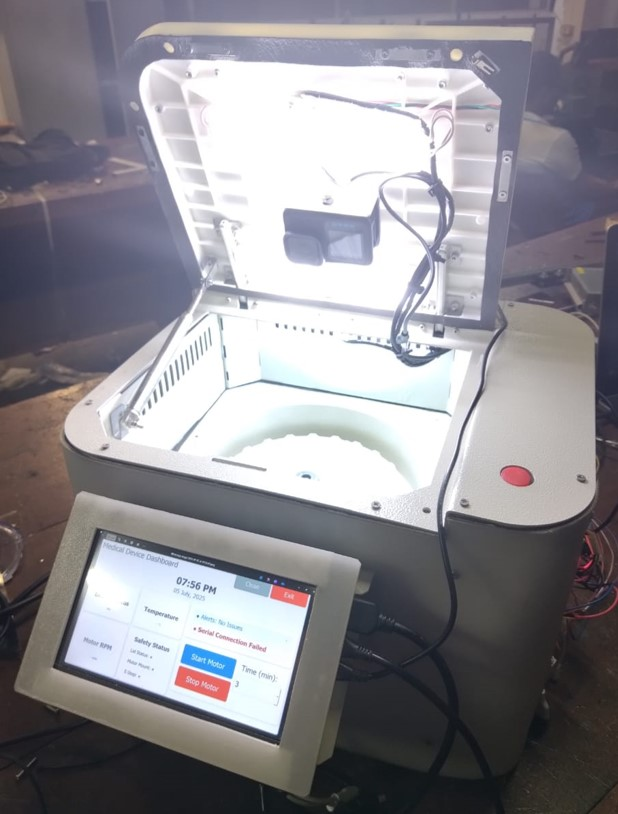
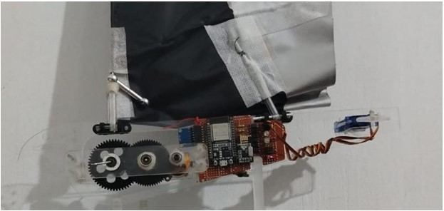
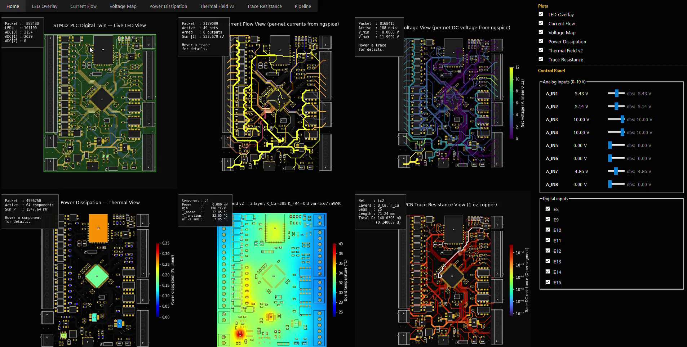
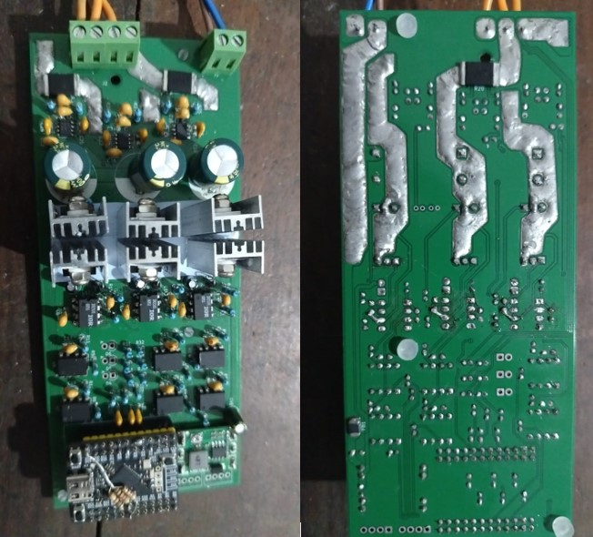
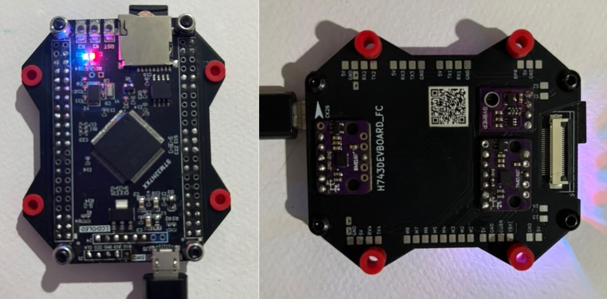
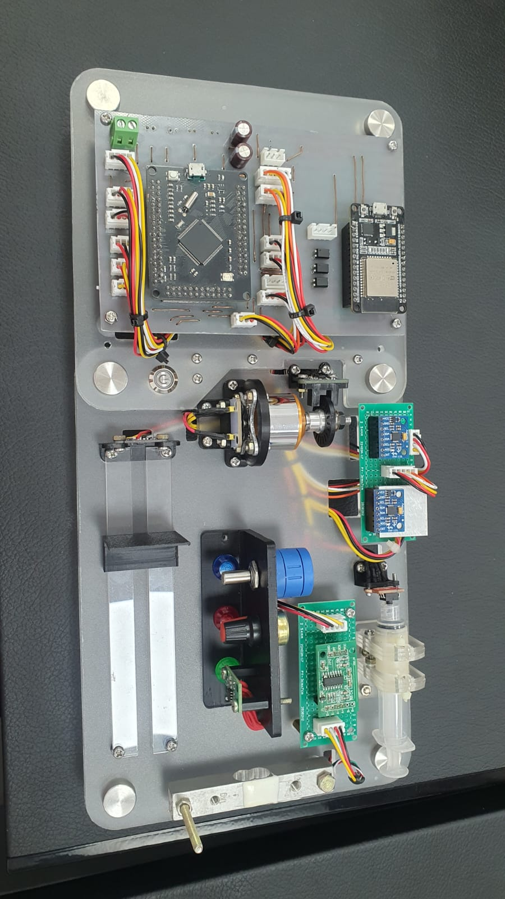
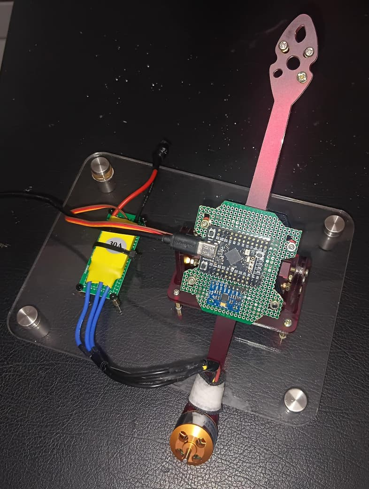
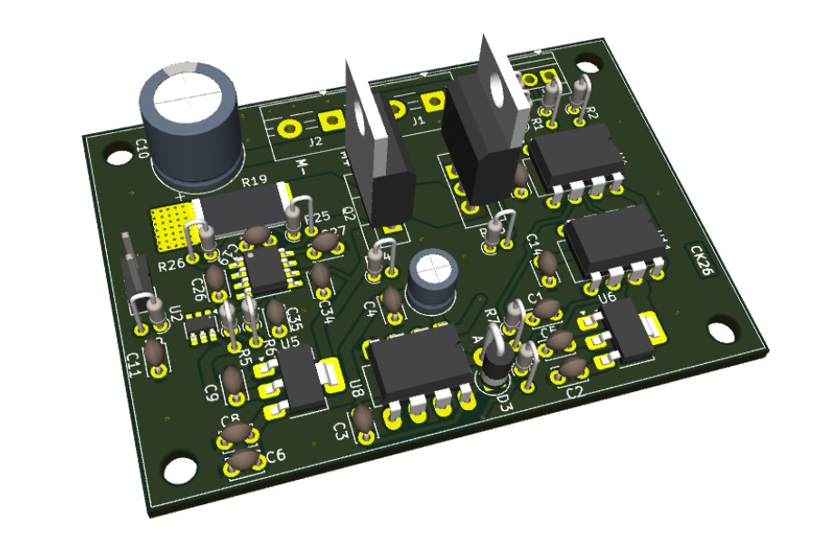
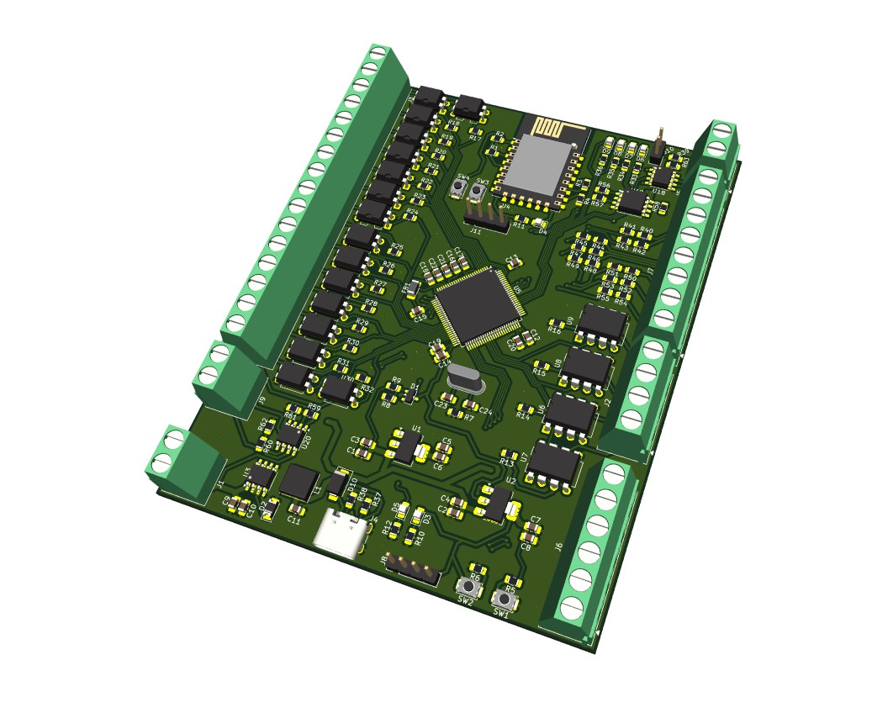

My work sits where hardware, firmware, and physics have to agree — sensorless motor control for UAVs, real-time PCB simulation, and a machine-vision tool for point-of-care blood diagnostics.



.kicad_pcb file. Real firmware on virtual MCU, live thermal and current rendering.




